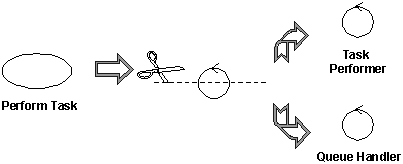
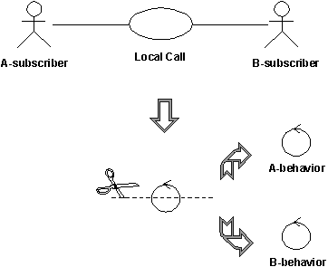

|
Классы анализа подразделяются на следующие стереотипы:
-
Пограничные классы
-
Управляющие классы
-
Сущностные классы
Помимо предоставления вам более подробных указаний о процессе при поиске классов, это разбиение на стереотипы повышает
устойчивость модели объектов, поскольку изменения в модели отражаются только в определенной области. Например,
изменения в пользовательском интерфейсе повлияют только на пограничные классы. Изменения в управляющем потоке - только
на управляющие классы. Изменения в долговременной информации - только на сущностные классы. Кроме того, эти стереотипы
особенно полезны при идентификации классов на этапах анализа и раннего проектирования. На последующих стадиях
проектирования рекомендуется рассматривать несколько иной набор стереотипов, лучше приспособленный к среде реализации,
типу приложений и т.п.
Пограничный класс - это класс, применяемый для моделирования взаимодействия между околосистемными и
внутрисистемными объектами. Такое взаимодействие предусматривает передачу и преобразование событий и внесение изменений
в представление системы (например, интерфейс).
Пограничные классы моделируют части системы, зависящие от ее окружения. Сущностные и управляющие классы - части, не
зависящие от околосистемных объектов. Таким образом, изменение GUI или протокола связи вызывает изменение только
пограничных, но не сущностных и управляющих классов.
Пограничные классы также упрощают понимание системы, поскольку они проясняют ее границы. Они помогают в проектировании,
предоставляя удобную исходную точку для определения связанных служб. Например, если на ранней стадии проектирования вы
определяете интерфейс принтера, то вскоре вы должны будете смоделировать форматирование распечаток.
К наиболее распространенным пограничным классам относятся окна, протоколы связи, интерфейсы принтеров, детекторы и
терминалы. Нет необходимости моделировать рутинные части интерфейсов, такие как кнопки, как отдельные пограничные
классы. Обычно все окно можно рассматривать как удобный структурный пограничный объект. Пограничные классы полезны
также при захвате интерфейсов API, которые могут быть не объектно-ориентированными, например устаревшего кода.
Пограничные классы следует моделировать в соответствии с тем, какой тип границы они представляют. Взаимодействие с
другой системой сильно отличается от взаимодействия с субъектом-пользователем (через пользовательский интерфейс). При
взаимодействии с субъектом-пользователем самое важное - это интерфейс, представляемый пользователю. При взаимодействии
с другой системой самое важное - это протокол связи.
Пограничный объект (экземпляр пограничного класса) может пережить экземпляр варианта использования, если, к примеру, он
должен появиться на экране в промежутке между запуском двух вариантов использования. Однако, как правило, пограничные
объекты живут столько же, сколько экземпляр варианта использования.
Выявление пограничных классов
Пограничный класс выступает посредником между интерфейсом и внешним по отношению к системе объектом. Пограничные
объекты изолируют систему от изменений в окружающем мире (изменений в интерфейсах связи с другими системами,
требованиях пользователей и т.п.), не позволяя этим изменениям повлиять на остальную часть системы.
В системе может быть несколько типов пограничных классов:
-
Классы пользовательского интерфейса - промежуточные классы в соединении с пользователями системы
-
Классы интерфейса системы - промежуточные классы в соединении с другой системой
-
Классы интерфейса устройств - классы, предоставляющие интерфейс устройствам (например, детекторам),
обнаруживающим внешние события
Выявление классов пользовательского интерфейса
Определите один пограничный класс для каждой пары вариант использования - субъект. Этот класс будет отвечать за
координирование взаимодействия с субъектом. Можно также определить вспомогательные пограничные классы, которым
основной пограничный класс передаст часть своих обязанностей. Это уместно, прежде всего, в случае приложений GUI с
окнами, в которых можно смоделировать по одному пограничному объекту для каждого окна или для каждой формы. Моделируйте
лишь ключевые абстракции системы; не моделируйте каждую кнопку, список и виджет в GUI. Цель анализа - сформировать
адекватную картину компонентов, из которых составлена система, а не проектировать все до мельчайших подробностей.
Другими словами, определите пограничные классы только для явлений в системе или для объектов, упомянутых в потоке
событий реализации варианта использования в анализе.
Сделайте наброски или воспользуйтесь дампами содержимого экрана из раздела Прототип пользовательского интерфейса, иллюстрирующими характеристики
и внешний вид пограничных классов.
Выявление классов интерфейса системы
Пограничный класс, взаимодействующий с внешней системой, отвечает за ведение диалога с ней; он предоставляет интерфейс
этой системы для создаваемой системы.
Пример
Снятие средств в банкомате должно быть проверено сетью банкомата - субъектом (который, в свою очередь, сверяет снятие с
банковской учетной системой). Для обеспечения связи с сетью банкомата можно определить объект Интерфейс сети банкомата.
Интерфейс существующей системы может уже быть определенным; в этом случае, обязанности должны быть выведены
непосредственно из определения интерфейса. Если существует формальное определение интерфейса, то его можно
деформализовать, поскольку в формальном определении здесь нет необходимости; просто запомните, что существующий
интерфейс будет использован повторно во время проектирования.
Выявление классов интерфейса устройств
В системе могут быть элементы, действующие как внешние (спонтанно изменяющие значение без влияния какого-либо объекта
системы), например оборудование детекторов. Хотя такой тип внешнего устройства и можно представить с помощью субъектов,
такое представление может оказаться неудобным для пользователей системы, поскольку в нем прослеживается тенденция
ставить устройства-субъекты и пользователей-субъектов на один "уровень". Отказываясь от объединения требований, мы,
однако, должны рассмотреть источник всех внешних событий и убедиться, что система может их распознавать.
Если устройство представлено как субъект в модели варианта использования, то применение пограничного класса в качестве
посредника в соединении между устройством и системой вполне оправданно. Если модель варианта использования не включает
эти "устройства-субъекты", то теперь пришло время их добавить, обновив при необходимости Дополнительные описания
вариантов использования.
Для каждого "устройства-субъекта" создайте пограничный класс, которому будут переданы обязанности устройства или
детектора. Если для устройства уже существует формально определенный интерфейс, запомните его - он понадобится вам во
время проектирования.
Управляющий класс - это класс, служащий для моделирования управляющего поведения для одного или нескольких
вариантов использования. Управляющие объекты (экземпляры управляющих классов) часто контролируют другие объекты,
поэтому их поведение можно назвать координирующим. Управляющие классы инкапсулируют конкретное поведение для варианта
использования.
Поведение управляющего объекта тесно связано с реализацией конкретного варианта использования. Во многих сценариях
можно даже сказать, что управляющие объекты "запускают" реализации варианта использования в анализе. Однако некоторые
управляющие объекты участвуют сразу в нескольких реализациях варианта использования в анализе, если задачи варианта
использования тесно взаимосвязаны. Более того, несколько управляющих объектов различных управляющих классов могут
участвовать в одном варианте использования. Не всем вариантам использования нужен управляющий объект. Например, если
поток событий в варианте использования связан с одним сущностным объектом, то этот вариант использования может
реализовываться пограничным объектом совместно с сущностным объектом. Вы можете начать с определения одного
управляющего класса для реализации варианта использования в анализе, а затем уточнить это по мере определения других
реализаций варианта использования в анализе и обнаружения общности.
Управляющие классы могут давать вклад в понимание системы, поскольку они представляют динамику системы, обработку
основных задач и управляющие потоки.
Когда система выполняет вариант использования, создается управляющий объект. По окончании выполнения варианта
использования его управляющие объекты обычно уничтожаются.
Заметьте, что управляющий класс не обрабатывает все, что требуется в варианте использования. Он лишь
координирует задачи других объектов, реализующих функциональную возможность. Управляющий класс делегирует задания
объектам, которые были назначены ответственными за функциональную возможность.
Выявление управляющих классов
Управляющие классы координируют работу системы. Некоторые варианты использования могут выполняться системой и без
управляющих объектов (а только с сущностными и пограничными объектами) - особенно варианты использования,
предусматривающие лишь простое манипулирование хранимой информацией.
Более сложные варианты использования обычно требуют применения одного или нескольких управляющих классов для
координирования поведения остальных объектов системы. Примерами управляющих объектов могут служить такие программы, как
администраторы транзакций, координаторы ресурсов и обработчики ошибок.
Управляющие классы эффективно разъединяют пограничные и сущностные объекты, делая систему более устойчивой к изменениям
в ее пограничном слое. Они также отделяют поведение, связанное с вариантами использования, от сущностных объектов,
делая последние более пригодными к многоразовому применению в вариантах использования и системах.
Управляющие классы предоставляют поведение, которое:
-
Не зависит от околосистемных объектов (не меняется при изменении этих объектов),
-
Определяет управляющую логику (порядок событий) и транзакции в варианте использования.
-
Мало меняется при изменении внутренней структуры или поведения сущностных классов,
-
Использует или задает содержимое нескольких сущностных классов и поэтому должно координировать их поведение.
-
Выполняется по-разному при каждой активации (поток событий может находиться в нескольких состояниях).
Решение вопроса о необходимости управляющего класса
Поток событий варианта использования определяет порядок выполнения различных задач. Сначала выясните, можно ли
управлять потоком с помощью уже уже определенных пограничных и сущностных классов. Для простых потоков событий,
которые, в основном, вводят, извлекают и отображают (или изменяют) информацию, применение отдельного управляющего
класса обычно не оправдано; за координирование варианта использования будут отвечать пограничные классы.
Поток событий должен быть инкапсулирован в отдельный управляющий класс, если поток сложный и состоит из
динамического поведения, которое может изменяться независимо от интерфейсов (пограничных классов) и хранилищ информации
(сущностных классов) системы. За счет инкапсулирования потоков событий один и тот же управляющий класс может
быть многократно использован для нескольких систем с разными интерфейсами и хранилищами информации (или, по крайней
мере, базовыми структурами данных).
Пример: управление очередью задач
Вы можете определить управляющий класс из варианта использования Выполнить задачу в Системе управления складом. Этот
управляющий класс обрабатывает очередь задач, обеспечивая правильный порядок их выполнения. Очередная задача в очереди
выполняется, как только выделяется соответствующее передающее оборудование. Таким образом, система может одновременно
выполнять несколько задач.
Поведение, определяемое соответствующим управляющим объектом, будет проще описать, если вы разделите его на два
управляющих класса - Исполнитель задач и Обработчик очереди. Объект Обработчик очереди следит только за порядком в
очереди и выделением передающего оборудования. Для всей очереди достаточно одного объекта Обработчик очереди. Когда
система переходит к выполнению очередной задачи, она создает новый объект Исполнитель задачи, который и выполняет
задачу. Таким образом, для каждой выполняемой системой задачи необходим отдельный объект Исполнитель задачи.

Сложные классы следует разделять по линиям схожих обязанностей
Принципиальное достоинство этого разбиения заключается в том, что мы отделили обязанности, связанные с обработкой
очереди (нечто, относящееся сразу ко многим вариантам использования), от конкретных задач управления задачами,
относящихся к этому варианту использования. Это упрощает понимание классов и их адаптацию по мере развития проекта.
Кроме того, это позволяет сбалансировать нагрузку на систему, поскольку для обработки заданий можно создать столько
Исполнителей задач, сколько необходимо.
Инкапсуляция основного и альтернативных/исключительных потоков событий в разных управляющих классах
Для того чтобы проще было вносить изменения, инкапсулируйте основной и альтернативные потоки событий в разных
управляющих классах. Если альтернативные и исключительные потоки полностью независимы, отделите и их друг от друга. Это
упростит расширение и обслуживание системы в будущем.
Разделение управляющих классов, в которых два субъекта совместно используют один и тот же управляющий класс
Управляющие классы также может потребоваться разделить, если несколько субъектов используют один и тот же управляющий
класс. Это позволит изолировать изменения в требованиях одного субъекта от остальной части системы. В случае, когда
стоимость изменения высока или его последствия неприемлемы, вы должны определить все управляющие классы, связанные с
несколькими субъектами, и разделить их. В идеальном случае каждый управляющий класс должен взаимодействовать (через
некоторый пограничный объект) не более чем с одним субъектом.
Пример: управление вызовами
Рассмотрим вариант использования Локальный вызов. Первоначально мы можем определить управляющий класс, чтобы
управлять самим вызовом.

Управляющий класс, обрабатывающий локальные телефонные звонки в телефонной системе, можно быстро разбить на два
управляющих класса - A-поведение и B-поведение, по одному для каждого участвующего субъекта.
В локальном телефонном звонке участвуют два субъекта: A-подписчик, инициализирующий вызов, и B-подписчик,
принимающий вызов. A-подписчик берет трубку, слышит долгий гудок, затем набирает номер, который система
сохраняет и анализирует. После получения всех цифр система отправляет прерывистый гудок субъекту A-подписчик и
звонок субъекту B-подписчик. В момент, когда субъект B-подписчик отвечает, гудок и звонок прекращаются и
начинается диалог между подписчиками. Когда оба подписчика вешают трубку, вызов завершается.
Необходимо контролировать два типа поведения: что происходит в системе A-подписчика и что происходит в системе
B-подписчика. По этой причине, исходный управляющий объект был разделен на два управляющих объекта - A-подписчик
и B-подписчик.
Разделять управляющий класс не нужно, если:
-
Вы можете быть уверены, что поведение субъектов, связанных с объектами управляющего класса, не изменится или
изменится лишь незначительно.
-
Поведение объекта управляющего класса по отношению к одному субъекту практически не связано с его поведением по
отношению к другому субъекту, так что все типы поведения можно хранить в одном объекте. Такое объединение типов
поведения затрудняет внесение изменений.
Сущностный класс - это класс, применяемый для моделирования хранимой информации и связанного с ней поведения.
Сущностные объекты (экземпляры сущностных классов) служат для хранения и обновления информации о некотором явлении,
например о событии, пользователе или реально существующем объекте. Обычно это постоянные объекты с атрибутами и
взаимосвязями, необходимыми в течение длительного времени, иногда - в течение всей жизни системы.
Сущностный объект обычно не связан с какой-нибудь одной конкретной реализацией варианта использования в анализе; иногда
сущностный объект не связан даже с самой системой. Значения его атрибутов и взаимосвязей часто задаются субъектом. В
некоторых случаях сущностный объект может понадобиться для выполнения внутренних системных задач. Поведение сущностных
объектов может быть столь же сложным, сколь и у других стереотипов объектов. Однако, в отличие от других объектов, это
поведение тесно связано с явлением, которое представляет сущностный объект. Сущностные объекты не зависят от среды
(субъектов).
Сущностные объекты представляют ключевые концепции разрабатываемой системы. Типичными примерами сущностных классов в
банковской системе могут служить Учетная запись и Клиент. В системе сетевой обработки - соответственно
Узел и Ссылка.
Если моделируемое явление не используется другими классами, то его можно смоделировать как атрибут сущностного класса
или даже как взаимосвязь между сущностными классами. С другой стороны, если явление используется любым другим классом в
модели проектирования, то его необходимо моделировать как класс.
Сущностные классы предоставляют другую точку зрения для изучения системы. Они демонстрируют логическую структуру
данных, которая поможет вам понять, что система должна предлагать своим пользователям.
Выявление сущностных классов
Сущностные классы представляют хранилища информации в системе; они обычно используются для представления ключевых
концепций системы. Сущностные объекты, как правило, пассивны и постоянны. Их основные обязанности заключаются в
хранении и управлении информацией в системе.
Источником для образования сущностных классов часто служат Глоссарий (разработанный во время определения требований) и
модель бизнес-домена (разработанная во время моделирования бизнеса, если оно выполнялось).
Допустимо следующее:
-
Ассоциации связи между двумя пограничными классами, например, для описания связи конкретного окна с другими
пограничными объектами.
-
Ассоциации связи или подписки, ведущие от пограничного класса к сущностному классу, поскольку пограничным объектам
может понадобиться отслеживать определенные сущностные объекты между действиями в пограничном объекте или получать
информацию об изменениях состояния в сущностном объекте.
-
Ассоциации связи, ведущие от пограничного класса к управляющему классу, так что пограничный объект может
активизировать конкретное поведение.
Допустимо следующее:
-
Ассоциации связи или подписки между управляющими и сущностными классами, поскольку управляющим объектам может
понадобиться отслеживать определенные сущностные объекты между действиями в управляющем объекте или получать
информацию об изменениях состояния в сущностном объекте.
-
Ассоциации связи между управляющими и пограничными классами, позволяющие передавать результаты активизированного
поведения в среду.
-
Ассоциации связи между управляющими классами, позволяющие создавать более сложные шаблоны поведения.
Сущностные классы должны быть только источником ассоциаций (связи или подписки) для других сущностных классов. Объекты
сущностных классов, как правило, живут долго; напротив, объекты управляющих и пограничных классов, как правило, живут
мало. С архитектурной точки зрения важно ограничить область, в пределах которой сущностный объект "видит" свое
окружение, чтобы было легче вносить изменения в систему.
ИзВ
(перемещаемость)
|
Пограничный
|
Сущностный
|
Управляющий
|
|
Пограничный
|
связь
|
связь
подписка
|
связь
|
|
Сущностный
|
|
связь
подписка
|
|
|
Управляющий
|
связь
|
связь
подписка
|
связь
|
Допустимые сочетания стереотипов ассоциаций
-
При определении нового типа поведения проверьте, существует ли класс со схожими обязанностями. Всегда, когда это
возможно, используйте классы повторно. Только убедившись в отсутствии объекта, который может выполнять такое
поведение, создавайте новые классы.
-
После определения классов проверьте их, чтобы убедиться в согласованности их обязанностей. Если обязанности классов
не пересекаются, разбейте объект на два или более классов. Соответственно, обновите диаграммы взаимодействия.
-
Если класс разбит из-за наличия в нем непересекающихся обязанностей, проверьте шаблоны, в которых класс играет
роль, и выясните, требуется ли их обновление. Обновите шаблоны, если это необходимо.
-
Класс всего лишь с одной обязанностью сам по себе не является проблемой, но возникает вопрос, зачем он нужен.
Существование всех классов должно быть оправданным.
|